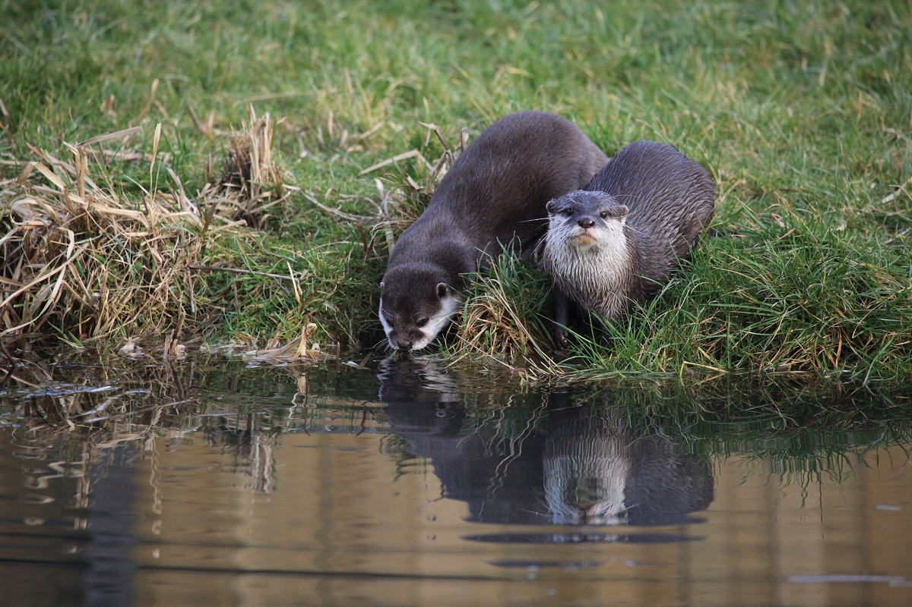

Carte d'identité
Les loutres (Lutrinae) sont une sous-famille de mammifères carnivores de la famille des mustélidés. Il existe plusieurs espèces de loutres, caractérisées par de courtes pattes, des doigts griffus et palmés (aux pattes avant et arrière) et une longue queue. En France on trouve des loutres d'Europe, qui font 120 cm de long pour 30 cm au garrot, et pèsent entre 6 et 15 kg
